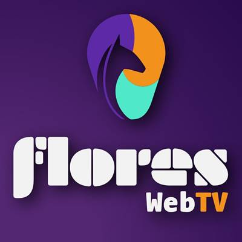
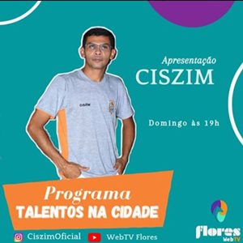
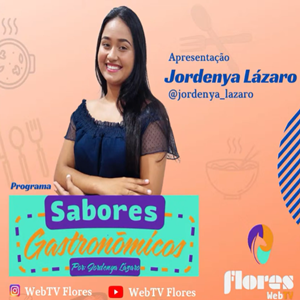
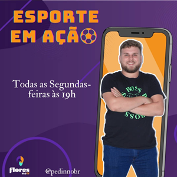
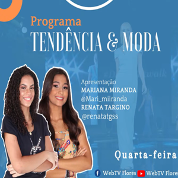
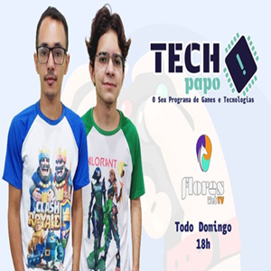
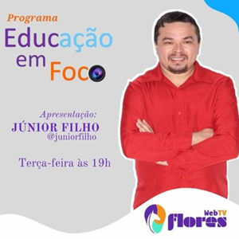

Web TV Flores
primeira web tv de florânia
Atualizado em 25 de maio de 2022
Quem nós somos

A WebTV Flores é a primeira WebTV da cidade de Florânia/RN!
Com uma ampla programação, busca trazer entretenimento de forma descontraída e dinâmica.
Nossa TV conta com programas diários a partir das 18:00 e com giros de notícias locais!
Talantos Na Cidade

O Talentos Na Cidade é uma programa apresentado pelo professor ciszim,focado em mostrar os grandes talentos que existe na cidade de florânia e região, apresentando todo o talento pessoal e em grupo de varias pessoas.
Sabores Gastronômicos

O Sabores Gastronômicos é um programa apresentado por Jordenya Lázaro focado em mostra os sabores da nossa terra, e os grandes taletos culinarios das pessoas de nossa região.
Esporte Em Ação

O Esporte Em Ação é um programa apresentado por Pedro Victor, um programa focado em esporte,não só regional como tbm dos esportes mundiais, contando também com transmissões de campeonatos e torneios.
Tendência & Moda

O Tendência & Moda é um programa apresentado por Mariana Miranda e Renata Targino, um programa que foca em todo no mundo da moda, temdência, estilo, dica de look, e muito mais.
TECH Papo

O TECH Papo é um programa sobre tecnologia, apresentado por Anderson Bruno e Joamerson Islan, nele tem todo sobre o mundo tec, mundo gamer, mundo geek e muito mais.
Momento Reflexivo
O programa Momento Reflexivo apresentado por Natália Rodrigues, é um programa voltado para a religiosidade e para refletir sobre a vida.
Educaçao Em Foco

O programa Educaçao em foco apresentado por Júnior Filho, é um programa focado em edução e aprendizagem no geral, mostrando vidas de professores e alunos da região.